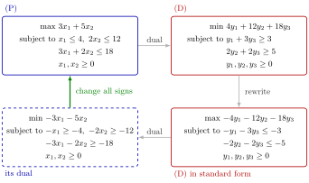

Dual of the Dual¶
Theorem¶
Theorem (dual of the dual). The dual of the dual of a linear program is the primal linear program itself.
Precisely, let , , , and let (P) be with dual (D) . Written in standard form, (D) is
and the dual of this linear program is . Replacing by and multiplying the constraints by turns it into (P): the same variables, the same feasible set and the same optimal solutions.
Interpretation¶
Duality is a pairing, not a one-way street. Dualizing twice leads back to where you started, so (P) and (D) form a primal–dual pair in which either one may be called the primal.

The figure follows Example 1 below around the loop. Dualizing (P) gives (D). Rewriting (D) in standard form turns into of the negated objective and multiplies its constraints by . Dualizing again gives the dashed linear program in , and changing all signs in it returns (P), with the same feasible set and the same optimal solution.
The word "is" should be read up to the rewriting rules used to bring a linear program into standard form: replacing of an objective by of its negative, and multiplying constraints by . Dualizing literally twice produces , which differs from (P) only by the sign of the objective and of each constraint (Example 1 below); its feasible set and optimal solutions are those of (P). In the transformation scheme the same fact is visible at once: every row pairs an entry of the max column with one of the min column, so reading the table from left to right and then back again returns the original signs and relations.
The theorem doubles every result about primal–dual pairs. A statement proved for (P) and its dual also holds with the roles exchanged, applied to (D) and its dual (P). For instance, "if (P) is unbounded, then (D) is infeasible" gives "if (D) is unbounded, then (P) is infeasible".
It also has a practical side. Solving a linear program will turn out to give a solution of its dual at no extra cost, so one may solve whichever of (P) and (D) is easier and read off the other. The number of constraints mainly drives the work per iteration, and (P) has constraints while (D) has (Example 3 below). The Simplex method makes this precise; see dual solution from the simplex tableau.
Key Results¶
- The dual of the dual of a standard-form linear program is the linear program itself, after the rewriting and multiplication of constraints by .
- The same holds for every pair produced by the transformation scheme, for example for and .
- Every consequence of weak duality and strong duality holds with the roles of primal and dual exchanged; for example, if (D) is unbounded then (P) is infeasible.
- Primal and dual have the same total number of constraints plus variables, , slack variables not counted.
- When , solving the dual, with constraints, instead of the primal saves computing time per iteration, though the total effort may still be higher because of the number of iterations.
Examples¶
1. Dualizing twice. The primal subject to , , , has dual subject to , , . In standard form this is
whose dual is subject to , , , . Changing all signs gives back the primal.
2. A pair with nonpositive dual variables. The dual of is . Substitute with and write it in standard form: subject to , . By the standard-form rule its dual is subject to , , which is the original linear program once is read as .
3. Counting constraints and variables. The statement "constraints plus variables is the same for primal and dual" is true: (P) has constraints and variables, (D) has constraints and variables. For a linear program with variables and constraints, the dual has variables but only constraints, so each Simplex iteration on the dual, whose work grows mainly with the number of constraints, is cheaper.
4. Round trip through the table. The linear program subject to with free has dual subject to , . Dualizing this minimization linear program with the min column, the equality constraints give free variables and the variables give constraints: subject to , , the original linear program.
Prerequisites¶
Related Concepts¶
- Weak Duality
- Strong Duality
- Possible Outcomes of a Primal–Dual Pair
- Dual Solution from the Simplex Tableau
- Revised Simplex Algorithm
- Minimization-to-Maximization Transformation
Sources¶
- Math VI: Convexity and Optimization · Week 5
- H. E. Nusse and M. Dienstknecht, Math VI: Convexity and Optimization, lecture notes 2026–2027, Section 5.2
Aliases: dual of the dual LP, symmetry of duality, duality is an involution, primal-dual pair Keywords: dual of the dual, \min\boldsymbol{b}^{\top}\boldsymbol{y}\ \text{s.t.}\ \boldsymbol{A}^{\top}\boldsymbol{y}\geq\boldsymbol{c}, \max-\boldsymbol{b}^{\top}\boldsymbol{y}\ \text{s.t.}\ -\boldsymbol{A}^{\top}\boldsymbol{y}\leq-\boldsymbol{c}, the dual of the dual is the primal, solve the easier of the two Symbols: element of, real numbers
Last updated: 5 November 2026 12:47
Dual of the DualStrong DualityDual Linear ProgramPrimal–Dual Transformation SchemeStandard Form of a Linear ProgramTransposeWeak DualityPossible Outcomes of a Primal–Dual PairDual Solution from the Simplex TableauRevised Simplex AlgorithmMinimization-to-Maximization Transformation